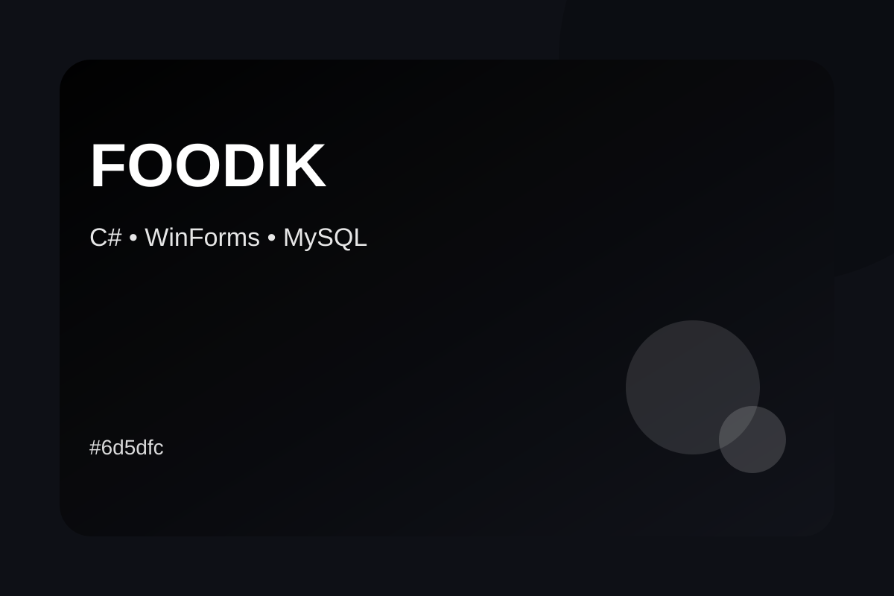
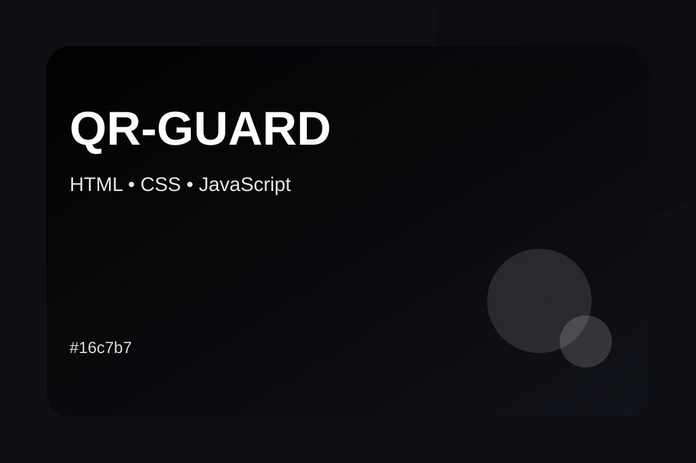
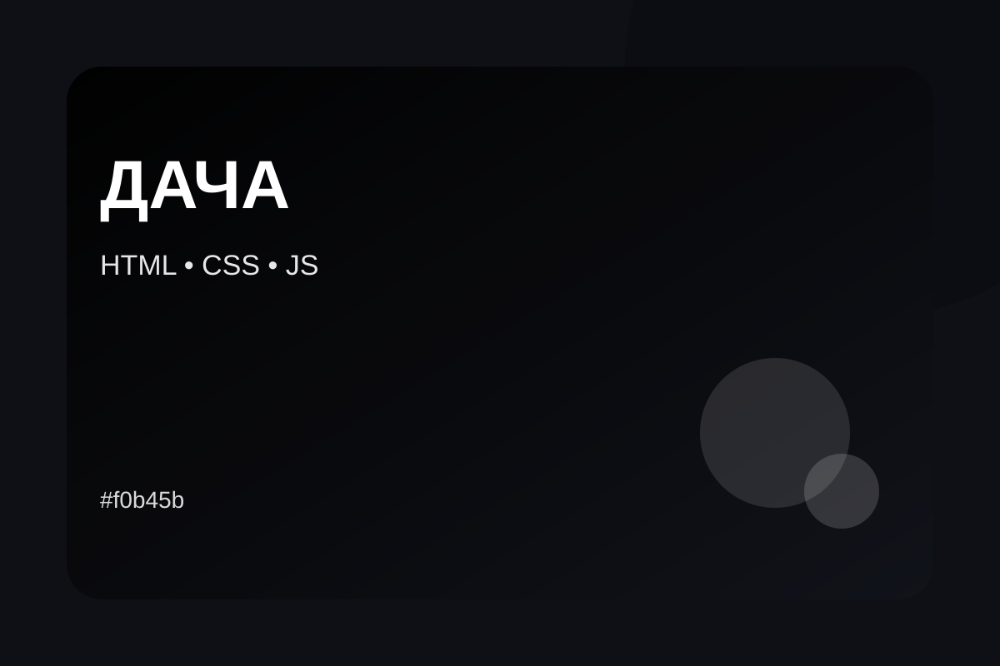
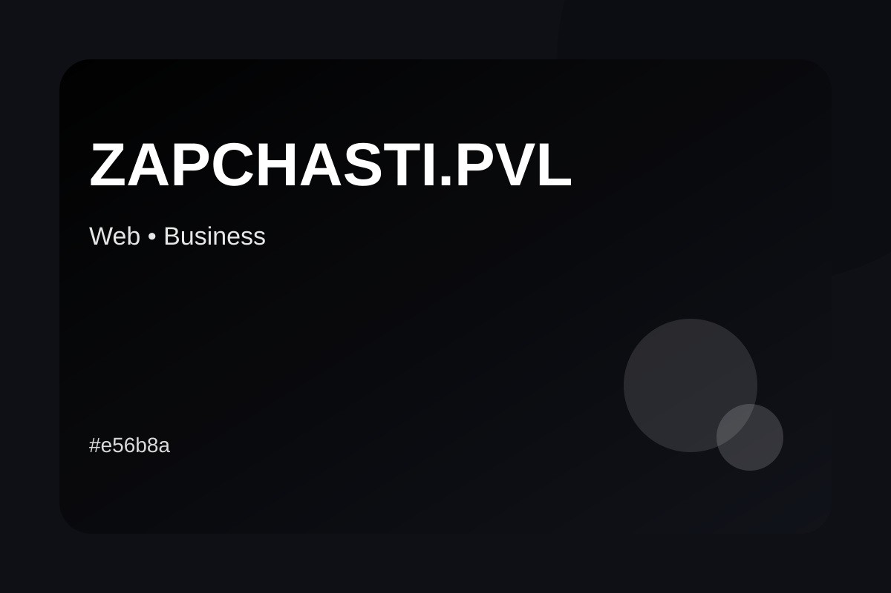
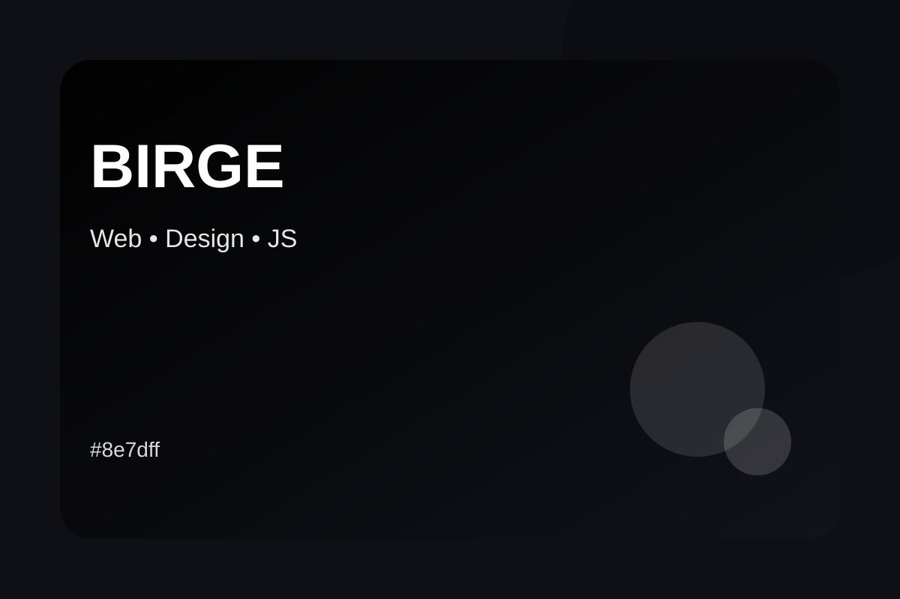
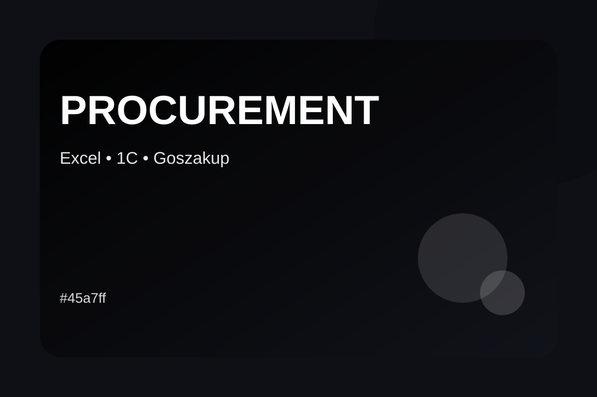

Foodik — ARM магазина
C# WinForms-приложение с MySQL для работы с товарами, клиентами, категориями и заказами.
Учебные, коммерческие и концептуальные проекты, в которых соединяются разработка и прикладная задача.

C# WinForms-приложение с MySQL для работы с товарами, клиентами, категориями и заказами.

Концепция защиты карточек товаров через уникальные QR-сертификаты и цифровую идентификацию.

Адаптивный сайт семейного ресторана с категориями меню и скрытой административной частью.

Идея сервиса поиска и доставки автозапчастей для клиентов Павлодарской области.

Концепция современного сайта-приглашения с анимацией, таймером и блоками события.

Практический опыт работы с закупками, расчётами, Excel, 1C и электронными закупочными площадками.